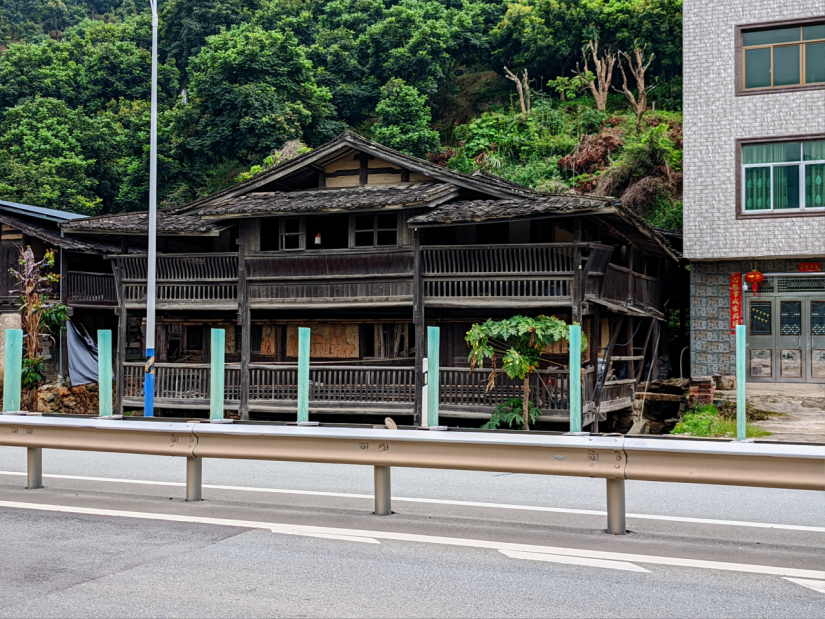
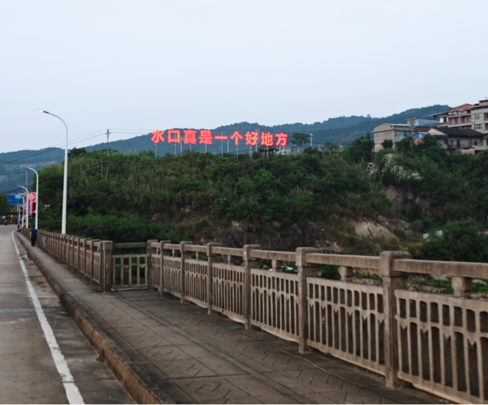

# 0. 前言
在五一的前一天晚上，我才决定了这次长途骑行的目的地。
我选择目的地的方式，其实还挺随机的 —— 先在高德上随便选个坐标，将出行方式设定为骑行，再看下总路程是否在一天内骑完，以及是否需要长时间的爬坡，若是条件合适便可以确定区域，最后在这块区域物色个合适的落脚点，就算计划完成了。
依照这样的方法，我将这次旅程的终点定在了宁德市古田县的水口镇。
从卫星地图上看，这个城镇正好位于闽江和古田溪的交汇处，突出的半岛上坐落着寺庙，蜿蜒的 N 字形河道更是垂钓者的天堂。在 Minecraft 里，这种环山抱水的 U 型谷地也称得上玩家开荒建家的顶级选址。
行囊比上次精简。行李包用来放衣物，斜挎包放些小零食和 pocket3，还有头盔，雨衣，充电包这些不可缺少的装备。
虽已是第二次踏上长途骑行之路，但总觉得没有初次那般有安全感。彼时一路南下，与归家方向完美重合；如今车轮驶向西北，每多一分里程，便与故土渐行渐远。
# 1. 启程
由于早上下了点小雨，10 点半才正式出发。一路上天气阴沉，没有阳光直射，也没有逆风阻拦，十分适合骑行。
从闽侯县出发，骑了三十多公里，发现人还在闽侯 —— 这个县城地域之广阔，我在初次骑行就体会到了。始终在一个县城里兜兜转转，实在让人倍感乏味无趣，我甚至在想：前些天对长途骑行那般魂牵梦绕，是否是初次骑行那时的新鲜感在作祟，明明此刻因连续上坡累得气喘吁吁，周围环境也枯燥无味。
但到了闽清之后，这种乏味感就消散了。或许是闽清的环境确实不一样，或许单纯是我的心理作用，仿佛只有跨过那条行政线的虚线后，才能卸下对旧城的滤镜，让心灵获得某种重启的仪式感。
相比于闽侯，闽清更有江边小城的感觉，靠着沿江公路骑，一路上有不少小路能直达闽江江岸，小货轮的汽笛声也时常响起。
越往里骑，越能明显地察觉到一些房子的地基非常之高，直接落在山腰上，估计是沿江的缘故，旧时那些低海拔的房屋被无情江水吞噬在了江底，只留下这些悬在半空的楼阁。

这是离此行目的地最近的一个城镇 —— 雄江镇，而著名的布达拉宫故有小 “雄江” 的美称。
驶过雄江镇，就到达了宁德市，此刻刚好阴云退散，夕阳的余晖洒落下来，像是在迎接我的到来。

# 2. 水口
大概下午六点左右，我到达了此行的目的地。刚到水口，就发生了件趣事。我问路上的大爷附近有没有宾馆，他说村口有一家，我想着村口靠近大马路，且恰逢五一假期，应该比较贵，想问下村里有没有，谁知大爷回答我：村里有🐔，点一位可以凑合住一晚🤣
水口镇因地处闽江险滩 “水口” 而得名，明清时期因商贸繁荣成为闽东北重镇。20 世纪 50 年代，国家启动建设古田溪水电站（福建省第一座大型水电站），水口镇因地处闽江岸边的低洼地带，属于库区淹没范围，居民需整体搬迁。所以容易发现现在的新址地势较高，多依山而建，呈阶梯状分布。
水口大坝。
大坝旁的一座桥。
石华禅寺的佛像俯瞰着水口镇，护佑当地居民的平安。
西瓜洲大桥。

依山傍水的小镇。
水口虽说风景独具韵味，但镇子着实不大，一个上午就能逛完。还留在这的居民多数是中老年人，仍保留古朴祥和的生活作息，晚上八九点镇子便已灯火渐熄。再考虑到食宿并不方便，所以我决定下午离开水口，继续往古田县城骑，去看看翠屏湖。

# 3. 古田
从水口到古田县城有三十多公里，其中上坡占了三分之二，对我来说是不小的考验。
晚上七点左右，我终于到了古田县城，骑完这大上坡后，行驶在平路上彷佛像是在走下坡路一般，十分轻松。
第一件事就是附近找个宾馆休整一下。五一假期物价难免上升，在与宾馆老板商讨降价无果之后，我只好从美团上薅券下单，没办法，吊毛有吊毛的活法。但老板好像因此有些针对我，我到了房间之后，发现刚好是楼层最靠边的一间房，而且床对面就是一面全身镜 —— 这让我很难不想起儿时在贴吧看到的那些恐怖禁忌杂谈，奈何本人威武阳刚，一身正气，丝毫不惧！
刚好附件有条小吃街，于是去尝了下古田的特色，青草汤。
这青草汤，第一口还行，第二口刚入喉头，便觉得寡淡无味，淡至你连它有什么功效都能晓之一二 —— 要么是清热解火，要么是怡神名目。待咽下去，又泛起一丝苦涩，甚至夹杂着缕草腥气。汤中那块老鸭，肉质极柴，嚼如老木，本想用鸭肉的油香中和汤的寡淡，结果汤不醇，鸭不香，两相辜负，幸好桌上尚有一碟酱油，这才勉强尝出来点咸鲜。相比于本性如此，我更相信是煮汤的人手拙。
离座时，那盆汤还剩一大半，如此素净，没有半点油星子，试一小碗尝尝鲜还行，当成主食着实有点为难自己了。
次日，我准备去翠屏湖看看。不知是酒店禁忌下的双重 debuff 起了作用，还是青草汤的 “毒性” 太强，即便是身体因骑行累得不堪，前一晚上我睡得一点也不舒服，次日起床头更是晕沉沉的，那段前往翠屏湖的大上坡，骑得我双腿酸痛，只能咬牙撑下。
夜晚的翠湖湖，忽略掉景观慢道那花里胡哨的彩灯，还是挺不错的。

# 4. 返程
5 月 4 号，我决定这天骑回福州，剩一天假期好好休息一下。
早上九点半，在路边吃了两碗锅边糊后，就准备正式出发了。
古田的锅边糊与漳州和泉州不像，其米浆含量更多，尝起来更加韧劲。
早上风和日丽，本以为此次返程只需考虑体力问题，不料午后风云突变，先是天色渐暗，继而乌云压境，到了傍晚，雨还是落了下来，山路灯光不多，让泥泞的路更加难走。到了闽侯，双腿已从酸痛变成了麻木。晚上十点半，我终于回到了屋子，此刻只想摊在床上。
可人的记忆总是爱作怪，日子一久，这些苦难的部分就被抹去了尖刺，只保留圆轮了轮廓，成了某种荣耀的印记、自由的象征。

有机会再见，古田。